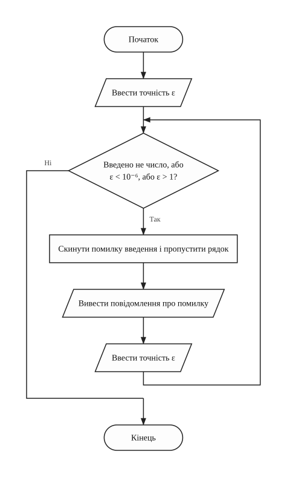
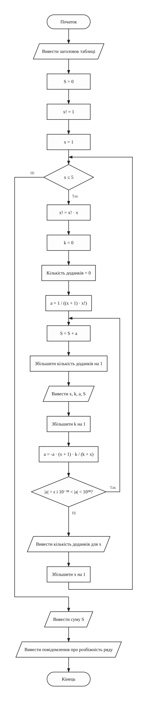
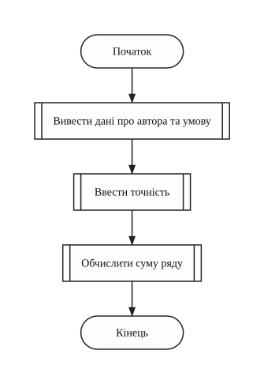
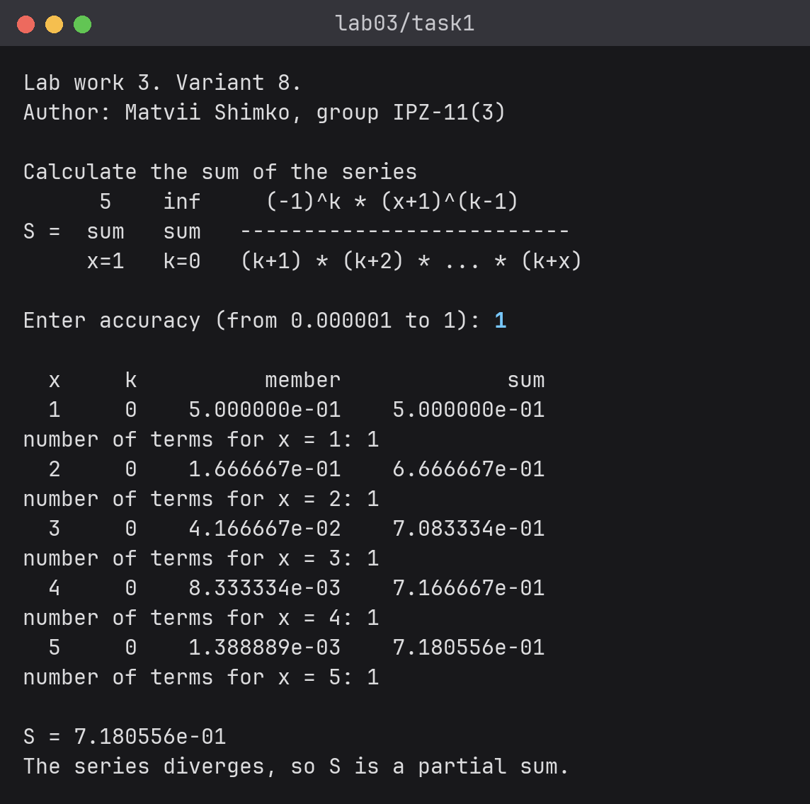
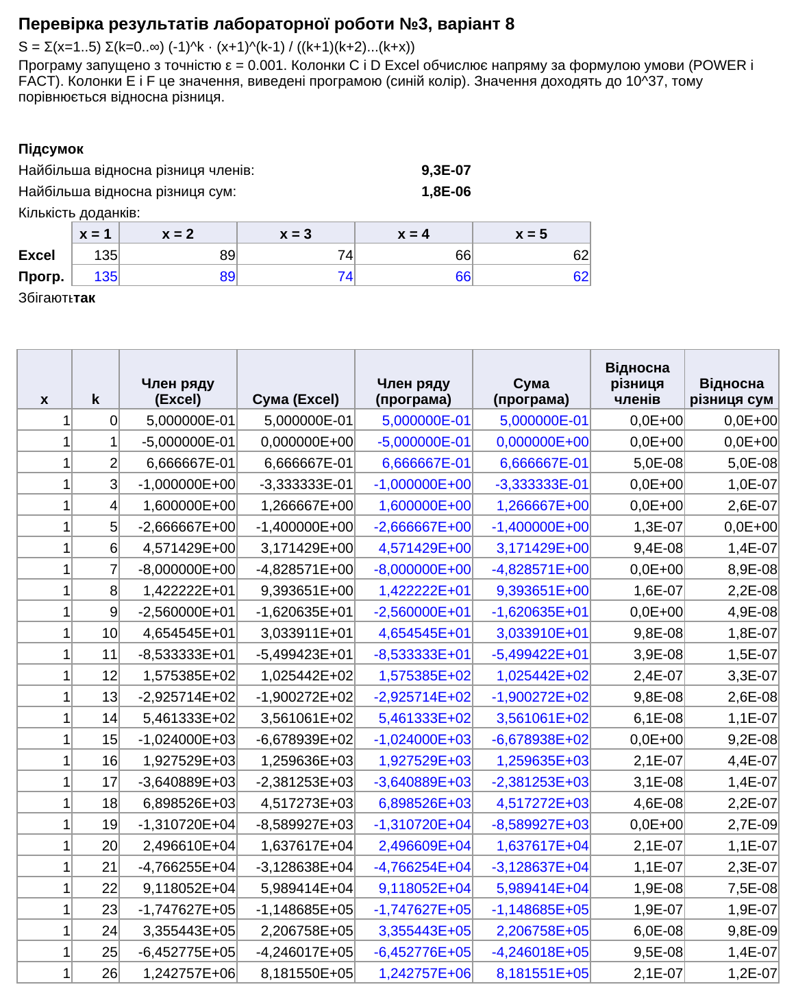

Основи програмування
Звіт до лабораторної роботи №3
Циклічні обчислювальні процеси • Варіант 8
Оберіть розділ звіту
Лабораторна робота №3 / 01 з 08
1. Мета роботи
- Вивчити особливості циклічних обчислювальних процесів.
- Опанувати технологію використання операторів циклів.
- Навчитися розробляти алгоритми та програми циклічних процесів.
Лабораторна робота №3 / 02 з 08
2. Умова задачі
Варіант 8
Варіант 8 (у таблиці 22 варіанти, 30 - 22 = 8).
Обчислити суму ряду:
Вимоги до програми:
- для зовнішньої суми з параметром від 1 до 5 використати цикл
for; - для внутрішньої суми з параметром від 0 до нескінченності використати цикл
whileабоdo ... while; - для визначення нескінченності задати точність розрахунку поточного елемента ряду;
- підсумовування припиняється, якщо досягнута задана користувачем точність;
- кількість доданків внутрішньої суми для кожного параметра зовнішньої суми має бути різною;
- факторіал і степінь числа обчислювати за рекурентними співвідношеннями;
- для запобігання переповненню вийти з внутрішнього циклу, коли поточний елемент ряду досягне 10-38 або 10+38;
- результат подати таблицею з чотирма колонками: параметри зовнішньої та внутрішньої сум, значення члена ряду і накопичувана сума.
Лабораторна робота №3 / 03 з 08
3. Аналіз задачі
Рекурентне обчислення членів ряду
Позначимо член ряду ax,k. Щоб не рахувати щоразу степінь і добуток із x множників, поділимо наступний член на поточний. Більшість множників скорочується, лишається:
При k = 0 степінь (x + 1)-1 дорівнює 1 / (x + 1), а добуток у знаменнику дорівнює 1 · 2 · ... · x = x!. Отже:
Мінус у формулі сам змінює знак. Факторіал рахується у циклі for:
x! = (x - 1)! · x.
Умова зупинки
Для заданої формули ряд розбіжний: модуль відношення сусідніх членів прямує до x + 1, а це більше за 1. Тому отримана сума є лише частковою, і програма повідомляє про це наприкінці.
Цикл do ... while завжди додає перший член і продовжує, поки модуль нового члена
більший за точність ε та лежить між 10-38 і 1038. Якщо перший член уже не
більший за ε, додається тільки він. Інакше цикл зупиняється на межі 1038, а член, що
вийшов за межу, не додається. Члени ростуть тим швидше, чим більше x, тому кількість доданків різна:
при ε = 0.001 їх 135 для x = 1 і 62 для x = 5.
Дані та перевірка введення
Дійсні величини мають тип float, а параметри x, k і кількість доданків цілі
(int).
Точність вводиться від 10-6 до 1. Якщо введено не число або число поза межами, програма виводить повідомлення і просить увести точність ще раз.
Структура програми
Таблиця 1 - Функції програми
| Функція | Призначення |
|---|---|
main | виклик основних кроків програми |
welcome | виведення даних про автора та умови задачі |
inputAccuracy | введення точності з перевіркою |
calculateSum | цикли по x і k, таблиця обчислень, сума S |
Джерела: Ковалюк Т.В. Алгоритмізація та програмування, 2024; Ковалюк Т.В., Петрівський В.Я. Гарний стиль програмування мовами C, C++, C#, 2025.
Лабораторна робота №3 / 04 з 08
4. Блок-схеми алгоритмів
Варіант 8

welcome (виведення даних про автора та умови задачі)

inputAccuracy (введення точності з перевіркою)

calculateSum (обчислення суми ряду і виведення таблиці)

main (головна функція)Лабораторна робота №3 / 05 з 08
5. Текст програми
Варіант 8
Файл task1.cpp
/////////////////////////////////////////////////////////////////////
// Ім'я файлу: task1.cpp
// Автор: Шимко Матвій, гр. ІПЗ-11(3)
// Номер версії модуля: version 2
// Запланована ціль: лабораторна робота №3, варіант 8.
// Обчислити суму ряду із заданою точністю
// і вивести таблицю обчислень.
/////////////////////////////////////////////////////////////////////
#include <cmath>
#include <iomanip>
#include <iostream>
using namespace std;
//=========== константи
const float MIN_ACCURACY = 0.000001f; // найменша допустима точність
const float MAX_ACCURACY = 1; // найбільша допустима точність
const float LOWER_LIMIT = 1e-38f; // межі модуля члена ряду з умови
const float UPPER_LIMIT = 1e38f;
//=========== глобальні змінні
float accuracy = 0; // точність
float sum = 0; // накопичена сума
float factorial = 1; // значення x!
float member = 0; // поточний член ряду
int x = 0; // параметр зовнішньої суми
int k = 0; // параметр внутрішньої суми
int termCount = 0; // кількість доданків для поточного x
/*
* Функція виводить дані про автора та умову задачі
* Параметри: немає
* Значення, що повертаються: немає
*/
void welcome()
{
cout << "Lab work 3. Variant 8." << endl;
cout << "Author: Matvii Shimko, group IPZ-11(3)" << endl << endl;
cout << "Calculate the sum of the series" << endl;
cout << " 5 inf (-1)^k * (x+1)^(k-1)" << endl;
cout << "S = sum sum --------------------------" << endl;
cout << " x=1 k=0 (k+1) * (k+2) * ... * (k+x)" << endl << endl;
}
/*
* Функція вводить точність. Якщо введено не число або число
* поза межами, введення повторюється
* Параметри: немає
* Значення, що повертаються: немає
*/
void inputAccuracy()
{
cout << "Enter accuracy (from 0.000001 to 1): ";
cin >> accuracy;
while (cin.fail() || accuracy < MIN_ACCURACY || accuracy > MAX_ACCURACY)
{
cin.clear(); // скинути помилку введення
cin.ignore(1000, '\n'); // і пропустити неправильний рядок
cout << "Error! Enter accuracy from 0.000001 to 1: ";
cin >> accuracy;
}
}
/*
* Функція рахує суму ряду і виводить таблицю. Для кожного x від 1 до 5
* внутрішня сума йде, поки член ряду більший за точність і не вийшов
* за межі 10^-38 та 10^38. Кожен член рахується через попередній
* Параметри: немає
* Значення, що повертаються: немає
*/
void calculateSum()
{
cout << endl << scientific << setprecision(6);
cout << setw(3) << "x" << setw(6) << "k" << setw(16) << "member" << setw(16)
<< "sum" << endl;
sum = 0;
factorial = 1;
for (x = 1; x <= 5; x++)
{
factorial = factorial * x; // x! = (x-1)! * x
k = 0;
termCount = 0;
member = 1 / ((x + 1) * factorial); // перший член, коли k = 0
do
{
sum = sum + member;
termCount++;
cout << setw(3) << x << setw(6) << k << setw(16) << member
<< setw(16) << sum << endl;
k++;
// спочатку ділення, щоб проміжне значення не вийшло за межі float
member = -member * (x + 1) / (k + x) * k;
} while (fabs(member) > accuracy && fabs(member) > LOWER_LIMIT
&& fabs(member) < UPPER_LIMIT);
cout << "number of terms for x = " << x << ": " << termCount << endl;
}
cout << endl << "S = " << sum << endl;
cout << "The series diverges, so S is a partial sum." << endl;
}
int main()
{
welcome();
inputAccuracy();
calculateSum();
return 0;
}
Лабораторна робота №3 / 06 з 08
6. Результати виконання роботи
Варіант 8
Таблиця довга, бо для малих x ряд доходить до межі 1038 за десятки кроків. Рисунок можна прогорнути або відкрити окремо.



Лабораторна робота №3 / 07 з 08
7. Аналіз достовірності результатів
Перевірка в Excel
Результати перевірено в Excel (файл check.xlsx). Там члени ряду
обчислено без рекурентної формули, напряму за формулою з умови через функції POWER і
FACT. Добуток (k + 1)...(k + x) дорівнює (k + x)! / k!. Поруч наведено значення, які
вивела програма при ε = 0.001.
Значення доходять до 1037, тому порівнюється відносна різниця |Excel - програма| / |Excel|.


- найбільша відносна різниця членів ряду 9.3 · 10-7, а накопиченої суми
1.8 · 10-6. Таку різницю дають похибка типу
float(близько 7 значущих цифр) та округлення під час виведення; - рекурентна формула дає ті самі значення, що й пряма формула умови;
- кількість доданків у Excel збігається з виведеною програмою: 135, 89, 74, 66 і 62 для x від 1 до 5.
Ручна перевірка
Перші члени при x = 1, коли a1,k = (-1)k · 2k-1 / (k + 1):
Таблиця 2 - Члени ряду при x = 1
| k | За формулою умови | За рекурентною формулою | Програма |
|---|---|---|---|
| 0 | 1/2 = 0.5 | 1 / (2 · 1!) = 0.5 | 5.000000e-01 |
| 1 | -1/2 = -0.5 | -0.5 · 2 · 1 / 2 = -0.5 | -5.000000e-01 |
| 2 | 2/3 = 0.666667 | 0.5 · 2 · 2 / 3 = 0.666667 | 6.666667e-01 |
| 3 | -4/4 = -1 | -0.666667 · 2 · 3 / 4 = -1 | -1.000000e+00 |
При ε = 1 для кожного x додається тільки перший член, тому S = 1/2 + 1/6 + 1/24 + 1/120 + 1/720 = 517/720 ≈ 0.718056. Програма вивела S = 7.180556e-01, значення збігаються.
Лабораторна робота №3 / 08 з 08
8. Висновки
Програма рахує суму ряду у вкладених циклах: for по x і do ... while по
k. Член ряду і факторіал обчислюються рекурентно, а результат виводиться таблицею з чотирма
колонками. Заданий ряд розбіжний, тому в результаті виходить лише часткова сума, і внутрішній цикл
здебільшого зупиняється на межі 1038. Обчислення за прямою формулою в Excel при
ε = 0.001 дали ті самі значення і ту саму кількість доданків для кожного x.